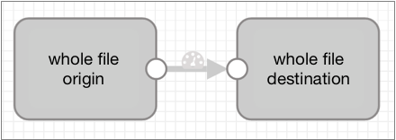

Whole File Data Format
You can use the whole file data format to transfer entire files from an origin system to a destination system. With the whole file data format, you can transfer any type of file.
When transferring whole files, Data Collector streams file data from the origin system and writes the data to the destination system based on the directory and file name defined in the destination.
Whole file records contain reference information for the file transfer. They do not contain data from within the files. While you can use several processors to read or modify the reference information, you cannot use typical processors, such as the Field Masker or the Field Replacer, to perform processing on file data. The only processor that substantially alters whole file data is the Whole File Transformer processor, which converts Avro files to Parquet. For more information, see Whole File Transformer.
By default, whole file transfers use available resources as needed. You can limit the resources used to transfer whole file data by specifying a transfer rate.
When the origin system provides checksum metadata, you can configure the origin to verify the checksum. Destinations that generate events can include checksum information in event records.
Most destinations allow you to define access permissions for written files. By default, written files use the default permissions of the destination system.
For a list of origins and destinations that process this data format, see Data Format Support.
Basic Pipeline
A pipeline that processes whole files include an origin and one or more destinations that support the whole file data format.
You can include certain processors to read or modify the file reference information included in the record, such as the file name or owner. You can also include a Whole File Transformer processor to convert Avro files to Parquet. However, a basic whole file pipeline looks like this:

Whole File Records
- fileref - Contains a reference that enables streaming the file from the origin system to the destination system. You can use scripting processors to read the fileref field. You cannot modify information in the fileref field.
- fileInfo - A map of file properties, such as file path, file name, and file owner. The details differ based on the origin system. You can use processors to modify information in the fileInfo field as needed.
Processors for File Reference Information
You can use several processors to read or modify file reference information in a whole file record. You can also use the Whole File Transformer processor to convert Avro files to Parquet. For more information, see Whole File Transformer.
- Expression Evaluator
- Use to update fileInfo fields.
- Groovy Evaluator, JavaScript Evaluator, and Jython Evaluator
- Use to access the fileref field by creating an input stream in the code using the getInputStream() API.
- Stream Selector
- Use to route files based on information in the fileInfo fields.

Defining the Transfer Rate
By default, the pipeline uses all available resources to transfer whole file data. Define a transfer rate to limit the resources that a whole file pipeline uses. For example, you might specify a transfer rate to enable running multiple whole file pipelines simultaneously or to reserve resources for other processing.
Specify a transfer rate by configuring the Rate per Second property in the origin, in the whole file data format properties.
The Rate per Second property is not used by default, allowing the pipeline to use all available resources. If you specify a transfer rate, the unit of measure is bytes per second by default. You can use a different unit of measure per second by using the unit of measure in an expression.
For example, if you enter 1000, then the pipeline uses a transfer rate of 1000
bytes/second. To specify a rate of 10 MB/second, you can use the following expression:
${10 * MB}.
Writing Whole Files
When writing whole files, you configure a File Name Expression property in the destination. The expression defines the name for the output file.
Each whole file origin includes file information in the fileInfo fields. So you can easily base the output file names on the original file names from the source system.
The following table lists the field names that hold the input file name for each origin, and a basic expression that names the output file based on the input file name:
| Origin | File Name Field Path | Base Expression |
|---|---|---|
| Directory | /fileInfo/filename | ${record:value('/fileInfo/filename')} |
| SFTP/FTP | /fileInfo/filename | ${record:value('/fileInfo/filename')} |
| Amazon S3 | /fileInfo/objectKey | ${record:value('/fileInfo/objectKey')}* |
| * Note that the objectKey field can include a field path as well as a file name. Use this expression when the objectKey is just a file name. | ||
Example
You want a pipeline to pass whole files from a local directory to Amazon S3. For the output file name, you want to append the .json file extension to the original file name.
${str:concat(record:value('/fileInfo/filename'), ".json")}${record:value('/fileInfo/filename’)}.jsonAccess Permissions
By default, when using the whole file data format, output files use the default access permissions defined in the destination system. Most destinations allow you to specify access permissions for output files. Amazon S3 does not allow it.
You can enter an expression to define access permissions. Expressions should evaluate to
a symbolic or numeric/octal representation of the permissions you want to use. For
example, to make files read-only for all users, the symbolic representation is
-r--r--r--. The numeric or octal representation is
0444.
${record:value('/fileInfo/permissions')}This ensures, for example, that a source file with execute permission for only the file owner is written to the destination system with the exact same set of permissions.
Including Checksums in Events
Destinations that generate events can include a checksum for each file.
When you enable checksum use, the destination includes the checksum and the checksum algorithm in the whole file event record. Whole file event records are generated each time the destination completes writing a whole file.
- MD5
- SHA1
- SHA256
- SHA512
- MURMUR3_32
- MURMUR3_128
For details about event generation and event records for a specific destination, see the destination documentation. For generation information about the event framework, see Dataflow Triggers Overview.